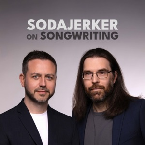
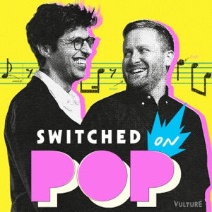
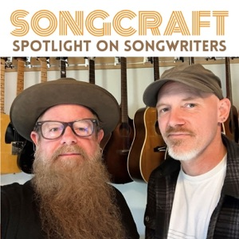
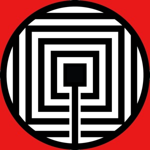

17 подкастів про пісні, яких вистачить на дорогу
Більшість підбірок подкастів ігнорують єдину річ, яка насправді вирішує, чи ти це слухатимеш: тривалість епізоду. Блискуче двогодинне шоу марне на двадцятихвилинній дорозі в метро.
Тому тут усе відсортовано за довжиною, і нові епізоди досі виходять — крім одного наприкінці списку, який все одно варто розкопати.
Коротка поїздка
До 30 хвилин. Одна дорога, один епізод, готово.

Song Exploder
Hrishikesh Hirway
Артист розбирає власну пісню на частини, програючи окремі стеми — голос без нічого під ним, синтезаторну лінію, яку всі пропустили, демо, яке ніхто не чув. Hirway повністю вирізає свої запитання з монтажу, тож звучить так, ніби артист сам веде тебе крізь пісню.
Тринадцять років в ефірі, понад 300 епізодів — архів величезний. Найякісніша річ у цьому списку і найлегша, щоб порадити будь-кому.
Почни з — The Postal Service, "The District Sleeps Alone Tonight" — найперший епізод, саме на нього й досі всіх відправляють. Або "Honey" від Robyn.

Story-First Songwriting
Melanie Naumann
Той рідкісний випадок, коли подкаст насправді про текст пісні — а не про продюсування чи історію музики, куди зазвичай з'їжджають подібні шоу. Кожен епізод розбирає текст реальної пісні і розбирається, чому він працює або ні.
Менш відшліфований, ніж великі шоу. Але якщо твоя проблема — слова, а не звук, це найбільш безпосередньо корисна річ тут.
Почни з — розбір "Remedy", про те, чому розмитий текст втрачає слухача.

Twenty Thousand Hertz
Dallas Taylor
Про звук, а не про написання пісень — та-дум Netflix, чому якийсь снейр звучить саме як 1985 рік, як обирають музику для фільму. На тему пісень виходить лише час від часу, але це змінить те, як ти чуєш власні міксі.
Щойно відсвяткував десятирічний ювілей, зроблений дуже красиво, і епізоди ідеально підходять за довжиною під дорогу.
Звичайна дорога
Від тридцяти п'яти до п'ятдесяти п'яти хвилин. Золота середина для більшості.

Sodajerker On Songwriting
Simon Barber & Brian O'Connor
Якщо додаєш лише одне шоу — нехай буде це. Ведучі самі є дуетом авторів пісень, і це помітно — вони ставлять питання, до яких журналіст би й не додумався, і гості відповідають інакше саме через це.
Цього місяця — п'ятнадцять років в ефірі й приблизно 330 епізодів. Список гостей абсурдний: McCartney, Nile Rodgers, Suzanne Vega, Brandon Flowers.
Почни з — епізоду 122, Paul McCartney — записано в LIPA, і справді багато дає про те, як він збирає пісні по секціях.

Switched On Pop
Nate Sloan & Charlie Harding
Музиколог і автор пісень розбирають поп-записи, щоб пояснити, що там насправді відбувається. Знання нотного запису не потрібне — у цьому й весь трюк: вони покажуть, чому приспів "злітає", на прикладі самої пісні, а не на нотному стані.
Понад 500 епізодів наразі. Супутня книга з'являється майже в кожному списку літератури для авторів пісень, включно з нашим.

Hit Parade
Chris Molanphy
Історія чартів, як треба. Molanphy знає архів Billboard краще за майже будь-кого і використовує це, щоб відповідати на питання на кшталт того, чому пісня дев'ять тижнів застрягла на другому місці, або як цілий жанр тихо захопив чарти.
Це про те, чому пісні стають успішними, а не про те, як вони написані — контекст замість ремесла, і від цього не менш корисно.

Dissect
Cole Cuchna
Один альбом на сезон, одна пісня на епізод, розібрана рядок за рядком і акорд за акордом. Більше схоже на університетський курс, ніж на розмовне шоу, і слухати варто по порядку.
Цього року — десять років в ефірі. Переважно хіп-хоп, хоча й не тільки.
Почни з — перший сезон, перший епізод — Kendrick Lamar, To Pimp a Butterfly. Не пропускай наперед, сезони будуються один на одному.

Sound Opinions
Jim DeRogatis & Greg Kot
Двоє критиків сперечаються про музику вже двадцять один рік і понад 1400 епізодів. Рецензії, інтерв'ю, тематичні списки й час від часу справді гаряча суперечка.
Критика, а не ремесло — але слухати, як люди точно пояснюють, чому щось працює, теж чогось навчає.

Broken Record
Rick Rubin, Malcolm Gladwell, Justin Richmond & Bruce Headlam
"Текст на вкладці платівки для цифрової епохи" — довгі розмови з музикантами, часто за участі самого Rubin, який дуже вправно витягує з людей те, чого вони раніше не говорили.
Чесне застереження: графік вийшов зі звичного ритму, і значна частина нещодавньої стрічки — перевипуски старих епізодів. Сприймай це радше як архів для розкопок, ніж як щось, за чим варто стежити щотижня.
Почни з — John Frusciante, яку вважають найвідвертішою розмовою Rubin у цьому шоу. André 3000 і Kenny Beats — двоє інших, кого завжди називають.
Довга дорога
Година й більше. Для автобанів і дуже поганих заторів.

And The Writer Is…
Ross Golan
Той подкаст, що про написання пісень як роботу. Golan написав хіти для Ariana Grande, Selena Gomez і Maroon 5, і він розпитує інших професіоналів про те, чого ніхто не романтизує: видавничі угоди, розподіл частки, хто насправді був у кімнаті, як пісню взяли в роботу.
Якщо хочеш зрозуміти індустрію, а не ремесло, нічого кращого немає.

Songcraft: Spotlight on Songwriters
Scott B. Bomar & Paul Duncan
Інтерв'ю на всю кар'єру, зазвичай прив'язані до однієї конкретної пісні. Майже 300 епізодів, і гості тяжіють до авторів з довгим каталогом, а не до тих, у кого цього місяця просто вийшов реліз.
Почни з — Bernie Taupin про "Tiny Dancer". Майже ідеальний приклад формату.

Tape Notes
John Kennedy
Найдовший тут і найбільш технічний. Kennedy садить в одну кімнату артиста і його продюсера й проходиться по тому, як запис фізично зібрали — який дубль вижив, на що записали демо-вокал, чому залишили помилку.
Якщо ти працюєш у DAW, це саме твоє. Якщо ні — деталей, можливо, більше, ніж тобі треба.
Почни з — Giles Martin про перевидання Rubber Soul.

Strong Songs
Kirk Hamilton
Hamilton розбирає одну пісню прямо за клавішами, граючи частини, поки пояснює їх. Найбільш музично підкована передача з усіх тут — він з радістю витратить десять хвилин на те, чому одна заміна акорду змінює все.
Темп сповільнився десь до раз на місяць, але в архіві вже близько 180 епізодів.
Почни з — недавній епізод про "Peg" від Steely Dan — хороший зразок того, що він робить.
Якщо хочеш, щоб тебе навчали, а не розважали
Відверто навчальний формат — менше історій, більше техніки.

Songwriter Theory
Joseph Vadala
Сольні епізоди про ремесло, націлені прямо на авторів, чиї пісні "майже чудові". Практично, без гламуру і конкретно про те, що виправляти.

SongTown on Songwriting
Clay Mills & Marty Dodson
Двоє професіоналів з Нешвіла про практичні проблеми — як зрозуміти, що пісня закінчена, як вирватися з глухого кута з мелодією, етикет співавторства. Dodson написав у співавторстві Song Building, яка з'являється у нашому дописі про вправи.

How To Write Songs
Keppie Coutts & Benny Romalis
Двоє працюючих авторів говорять про ремесло — нещодавно були цикли про мелодію й про те, що ШІ насправді означає для авторів пісень. Молоде шоу, епізодів поки небагато, тож наздогнати легко.
Лише для архіву
Нові випуски вже не виходять — але варто покопатися.

The Trap Set
Joe Wong
Номінально про барабанщиків, насправді — одне з найкращих інтерв'ю-шоу, яке дала музична індустрія. Wong напрочуд добре вміє розговорити людей про невдачі, сумніви й роки, які не склалися.
Нічого нового з середини 2025 року, тож не підписуйся в очікуванні нових епізодів. Але майже 400 старих нікуди не ділися.
З чого почати
- Є двадцять хвилин і хочеться ремесла — Song Exploder.
- Пишеш тексти і потрібна допомога саме з текстом — Story-First Songwriting.
- Лише одна підписка — Sodajerker.
- Хочеш розуміти музику, а не лише історію — Switched On Pop, а коли буде мало — Strong Songs.
- Хочеш заробляти цим на життя — And The Writer Is…
- Не лише пишеш пісні, а й записуєш їх — Tape Notes.
Посилання Apple ведуть прямо на кожне шоу; кнопки Spotify та YouTube запускають пошук, бо ці платформи міняють свої URL частіше, ніж хотілося б.
Одна практична порада, адже це список для дороги. Ідеї з цих шоу приходять, поки ти за кермом або стоїш на платформі — тобто в найгірший момент, щоб хоч щось записати. Чим би ти не фіксував думки — голосовою заміткою, застосунком для нотаток, Jam Room — тримай це напоготові ще до того, як натиснеш "відтворити". Епізод почекає десять секунд.